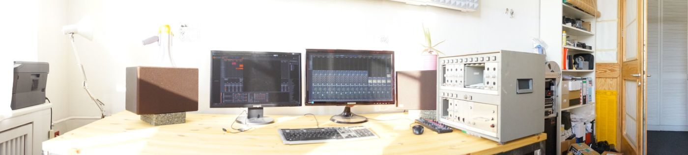
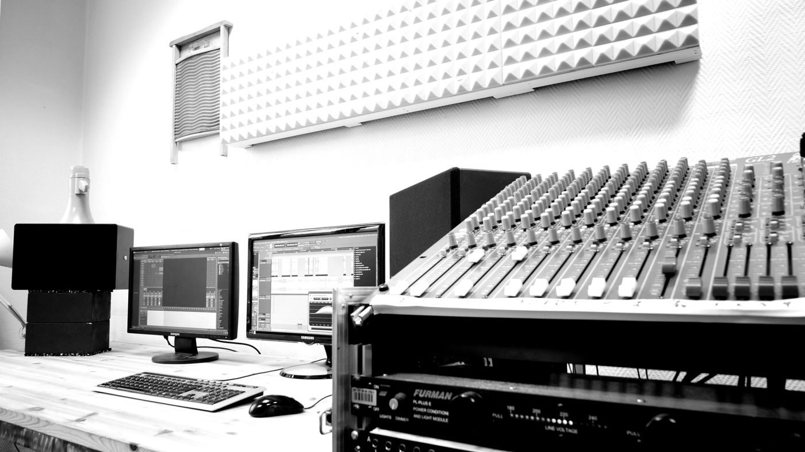
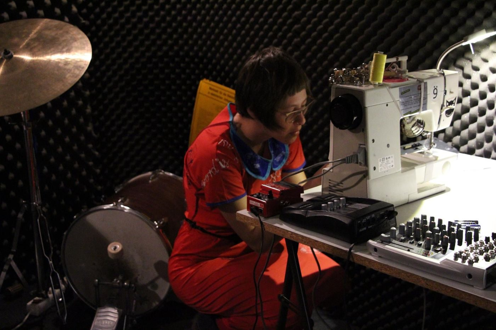
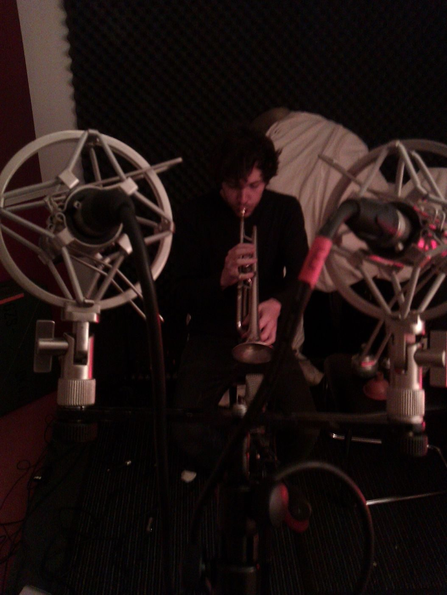
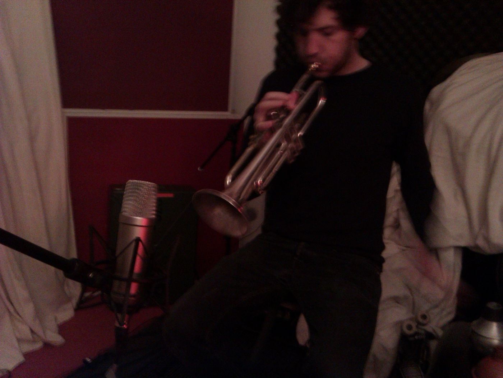
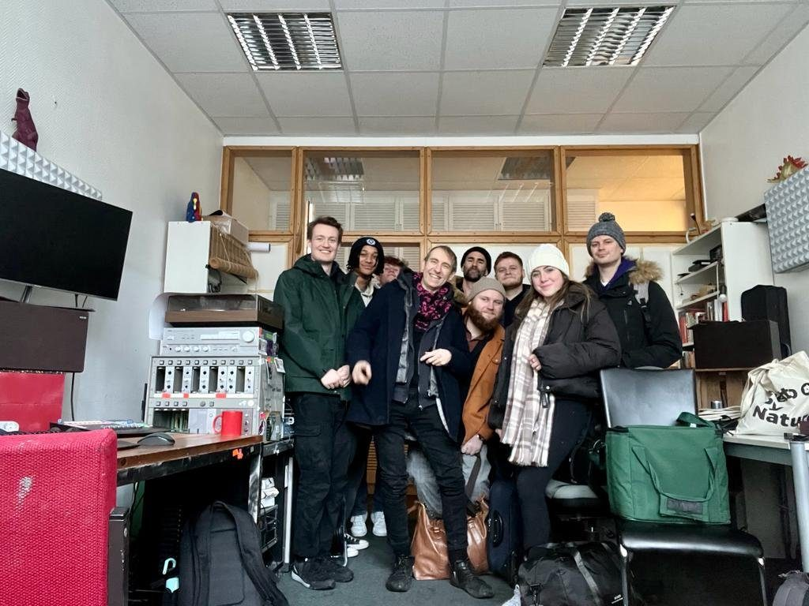

About
Kris Limbach (born 1978) is a sound artist and composer based in Berlin. His compositions borrow cutting techniques from film post production to build non linear structures in time out of field recordings, tape, prepared drums, electronics and improvisation. Much of the material is recorded at very low levels: small objects, room tones, quiet field recordings that need a quiet, treated room.
Film comes into his practice from the sound side: scores, sound and live performance for John Bock’s films and installations since 2007, live performances for film and tape, and experimental features whose editing follows musical rather than narrative logic. His films Music for Dysfunctional Airports, The Lost Color and Ohnmacht have been shown at film and media art festivals internationally.
He studied physics (Diplom, Freie Universität Berlin). His first experimental film, Cuento Incompleto, was published in 2005 in a book project in Madrid. Since 2009 he co-runs emitter micro, a label and festival for experimental sound, with Pierce Warnecke and Seiji Morimoto, and since 2020 he directs T.A.T.V., an expanded television festival. He has released on Contour Editions, dents de scie, Walther König, Staaltape, Silent Records and many more, and worked with John Bock, Pierce Warnecke, Seiji Morimoto, Jochen Arbeit, Hopek Quirin, Rieko Okuda, Lisa Müller-Trede and Rinus van Alebeek, among others.
CV
Residencies
- 2025Something Great, Schloss Mettin
- 2024EMS Elektronmusikstudion, Stockholm (Full Album)
- 2023EMS Elektronmusikstudion, Stockholm (Vertical Movements)
- 2022Zero Point Video Lab, with Meg Stuart and Abraham Hurtado
- 2021Programa Cruce, Madrid (Vertical Movements, VG Bild-Kunst)
- 2021window interface #11, Liebig12, Berlin (fungus circuits)
- 2019Film production residency, AADK Spain
- 2014SONM and AADK, Murcia
Funding
- Musikfonds (T.A.T.V. #3, #6)
- Musikfonds / Neustart Kultur (Vertical Movements, 2021)
- VG Bild-Kunst (Programa Cruce, 2021)
- Initiative Neue Musik Berlin (T.A.T.V. #2)
Formation
- 2005 to 2011Diplom in Physics, Freie Universität Berlin
- since 2007Karate and Arnis (Eskrima)
Workspace
Since 2009 Kris Limbach shares a studio with Seiji Morimoto in the atelier house Kiefholzstraße 19/20 in Alt-Treptow: a treated recording room and a monitoring room used for composition, recording and rehearsal, and the base of emitter micro. The Berliner Immobilienmanagement (BIM) has terminated all leases in the building as of 31 December 2026.





